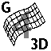

|  | Graph 3D v4.1 |
By Christopher Mitchell ("Kerm Martian") | |
Table of Contents | |
| 1. Installation | |
| 2. Running Graph 3D v4.1 | |
| 3. Features | |
| 4. More Info | |
1. InstallationGraph 3D v4.1 is a full-featured 3D graphing utility for the TI-84 Plus C Silver Edition graphing calculator. It is not for the earlier TI-83 Plus and TI-84 Plus calculators; for 3D graphing on those calculators, try Graph3D 4.0. Graph3D v4.1 can simultaneously graph up to six 3D equations, rotate, and trace, the resultant graphs. It contains powerful tools to modify and edit the resultant graphs, adjust the window, zoom, and rendering options. To install Graph 3D v4.1 on your calculator, simply send Graph3D.8xp to your calculator using your GraphLink-compatible software. Once on the calculator, run prgmGRAPH3D. You will see the welcome screen; press [ENTER] to continue, then use the program normally. | |
2. Using Graph 3D v4.1To run Graph 3D from the TI-OS (for most users), simply press [PRGM], select GRAPH3D with the arrows, and press [ENTER] twice. You can also run Graph 3D v4.1 using Doors CS 7. When you run Graph 3D, you will start at the equation entry screen, accessible from anywhere within Graph 3D with the [Y=] button. The functions in Graph 3D correspond exactly to the keys in the regular graph tool. [WINDOW] lets you edit the windows settings, [ZOOM] lets you zoom the current window, [2nd][ZOOM] edits the graph format, [TRACE] lets you graph and trace the current graphs, and [GRAPH] will render the current 3d equations with your window settings. Press [2nd][MODE] at any time to quit Graph 3D. | |
3. FeaturesGraph 3D contains a variety of features to help you use and manipulate your 3D graphs. They include:
| |
4. More InfoFor more information, check out Cemetech at cemetech.net. You can discuss this and other Cemetech projects on the Cemetech Forum. | |